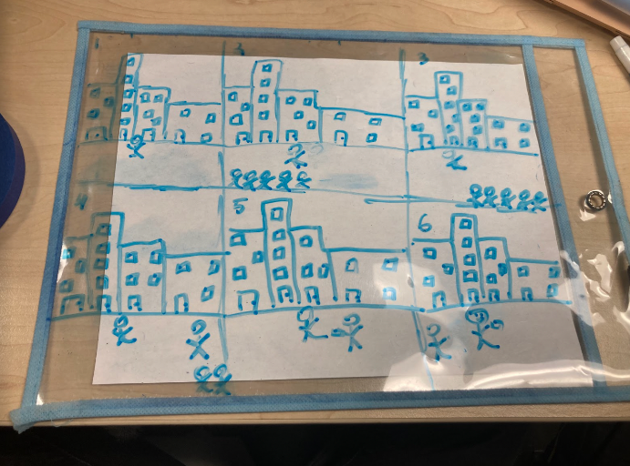

The reason why there is discrimination against homeless people is because that people look at them and automatically think they are lazy because he doesnt have a job or even a family to take care of. That might happen because he might have got a divorce and his partner won the battle or he might have got fired from a job and now doesnt have enough to support himself.
What we can do is acknowledge them and help out by giving them a dollar or so just so that they can get their confindence up and making themselves a better person. Another way that we can help is by helping them get a job, they might not have the skills to get a job or the recognition and by getting them a interview will help out a lot for them.
